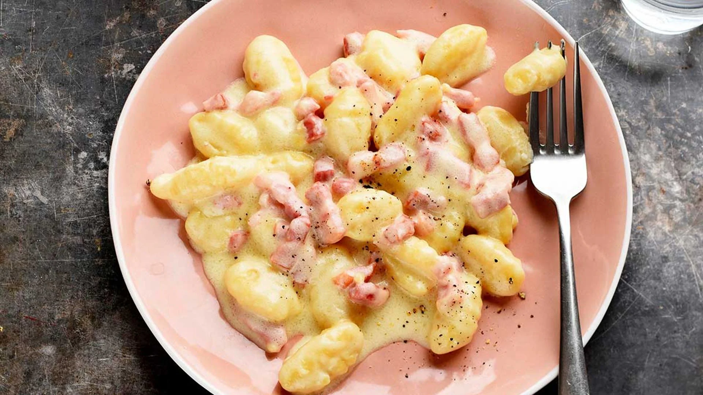
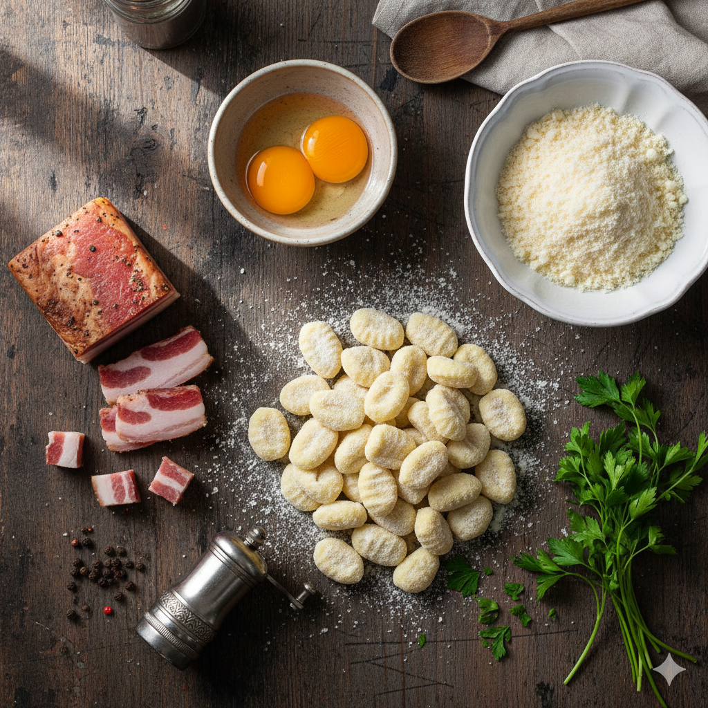
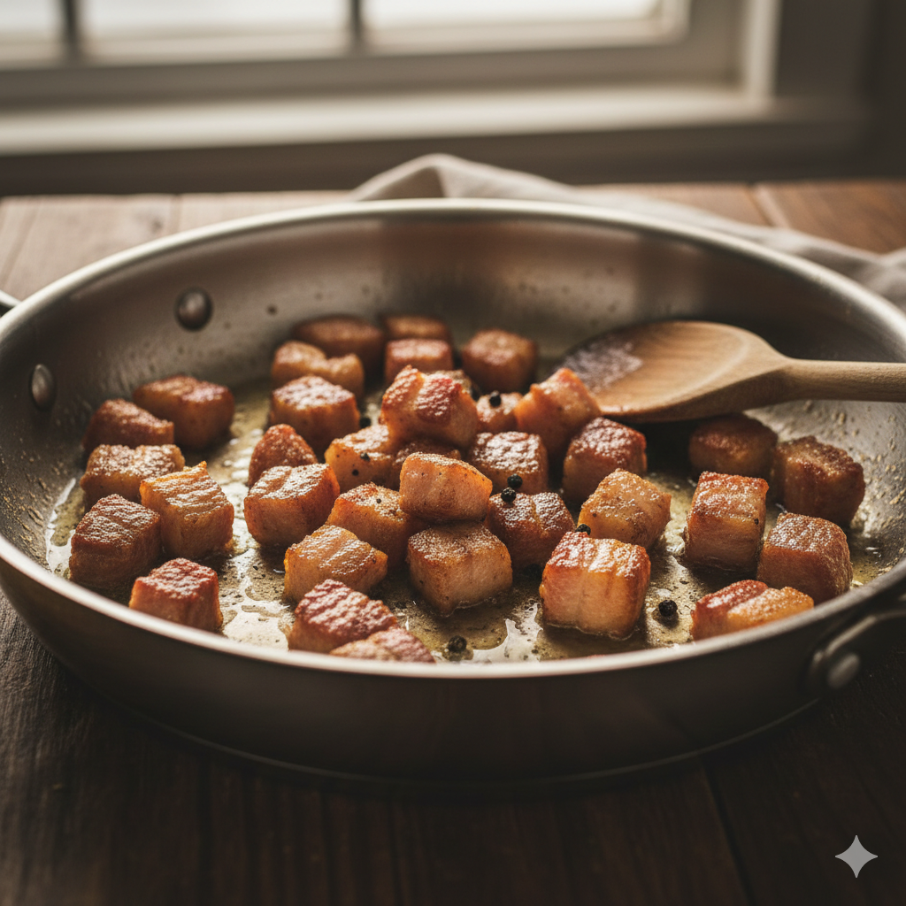
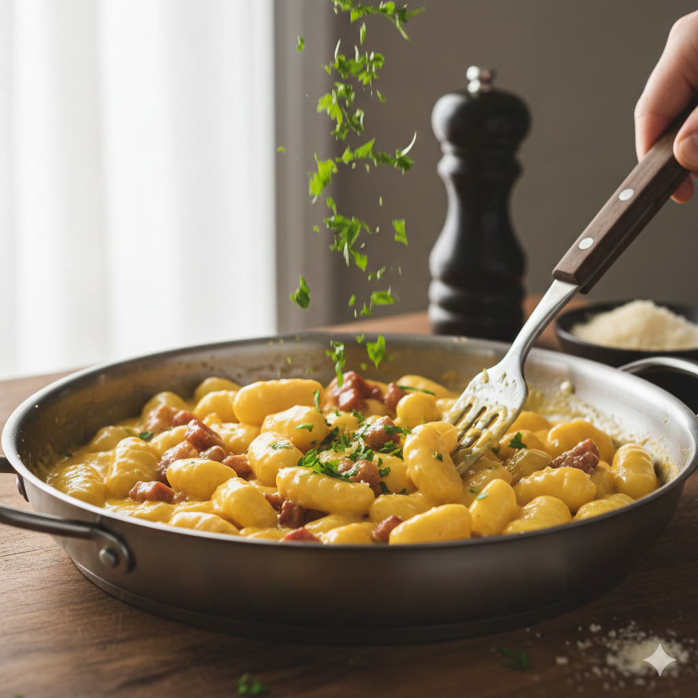

Gnocchis carbonara

Ingredientes
- Gnocchi; 500g
- Guanciale; 100g
- Llemas de huevo; 3 grandes
- Pecorino Romano; 50g
- Pimienta Negra; Al gusto
- Perejil; Un manojo fresco

Preparación
- El "Crocante": Corta el guanciale en tiras o cubos. Ponlo en una sartén fría y calienta a fuego medio. Deja que suelte su propia grasa y se dore hasta que esté crujiente. No tires la grasa, es oro líquido para el sabor.

- La Crema: Mientras tanto, en un bol pequeño, mezclar las yemas de huevo con el queso Pecorino y mucha pimienta negra hasta formar una pasta espesa.
- Los Gnocchi: Hervir agua con poca sal. Cocinar los gnocchi; en cuanto floten, retirarlos.
- El Truco Térmico: Antes de escurrir, añadir una cucharada del agua de cocción a la mezcla de yemas y queso para atemperarla y evitar que se corte después.
- La Unión: Pasar los gnocchi directamente a la sartén con el guanciale (fuego apagado o muy bajo). Saltear para que se impregnen de la grasa.
- El Toque Final: Apartar la sartén del fuego (vital para no cocinar de más el huevo). Verter la mezcla de huevo y queso junto con el perejil picado. Remover enérgicamente, añadiendo un poco más de agua de cocción si es necesario, hasta que se forme una salsa sedosa que abrace a los gnocchi.
